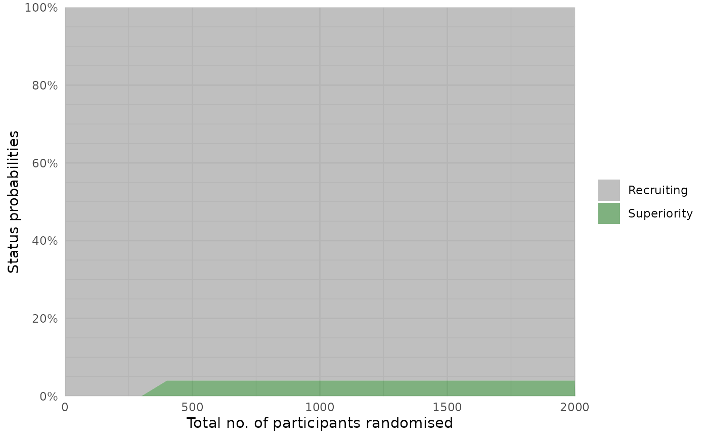
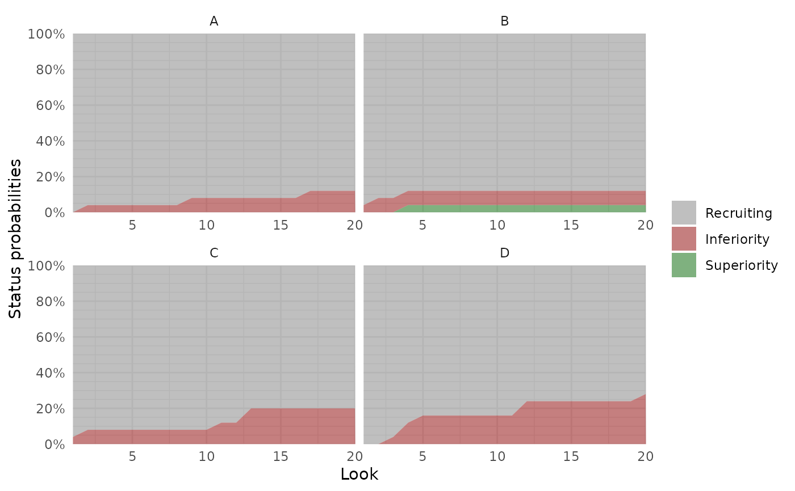

Plots the statuses over time of multiple simulated trials (overall or for one
or more specific arms). Requires the ggplot2 package installed.
Arguments
- object
trial_resultsobject, output from therun_trials()function.- x_value
single character string, determining whether the number of adaptive analysis looks (
"look", default), the total cumulated number of participants randomised ("total n") or the total cumulated number of participants with outcome data available at each adaptive analysis ("followed n") are plotted on the x-axis.- arm
character vector containing one or more unique, valid
armnames,NA, orNULL(default). IfNULL, the overall trial statuses are plotted, otherwise the specified arms or all arms (ifNAis specified) are plotted.- area
list of styling settings for the area as per
ggplot2conventions (e.g.,alpha,linewidth). The default (list(alpha = 0.5)) sets the transparency to 50% so overlain shaded areas are visible.- nrow, ncol
the number of rows and columns when plotting statuses for multiple arms in the same plot (using faceting in
ggplot2). Defaults toNULL, in which case this will be determined automatically where relevant.
Examples
#### Only run examples if ggplot2 is installed ####
if (requireNamespace("ggplot2", quietly = TRUE)){
# Setup a trial specification
binom_trial <- setup_trial_binom(arms = c("A", "B", "C", "D"),
control = "A",
true_ys = c(0.20, 0.18, 0.22, 0.24),
data_looks = 1:20 * 100)
# Run multiple simulation with a fixed random base seed
res_mult <- run_trials(binom_trial, n_rep = 25, base_seed = 12345)
# Plot trial statuses at each look according to total allocations
plot_status(res_mult, x_value = "total n")
}

if (requireNamespace("ggplot2", quietly = TRUE)){
# Plot trial statuses for all arms
plot_status(res_mult, arm = NA)
}
